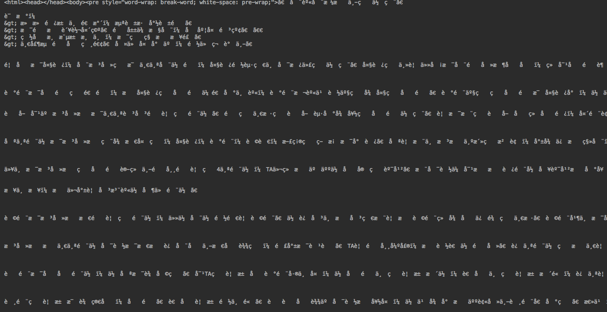
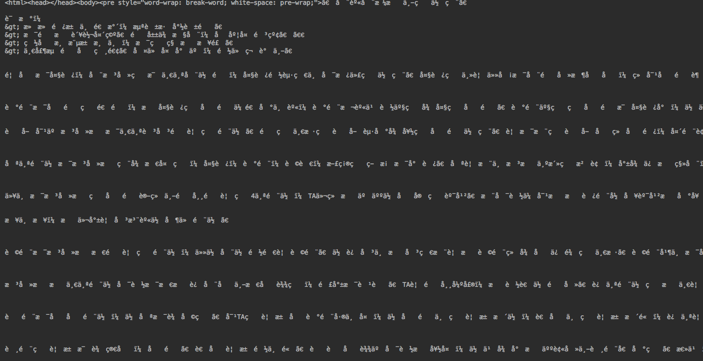
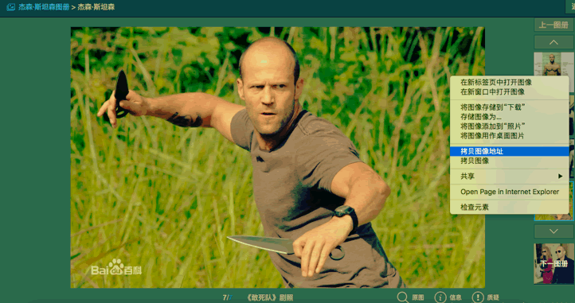
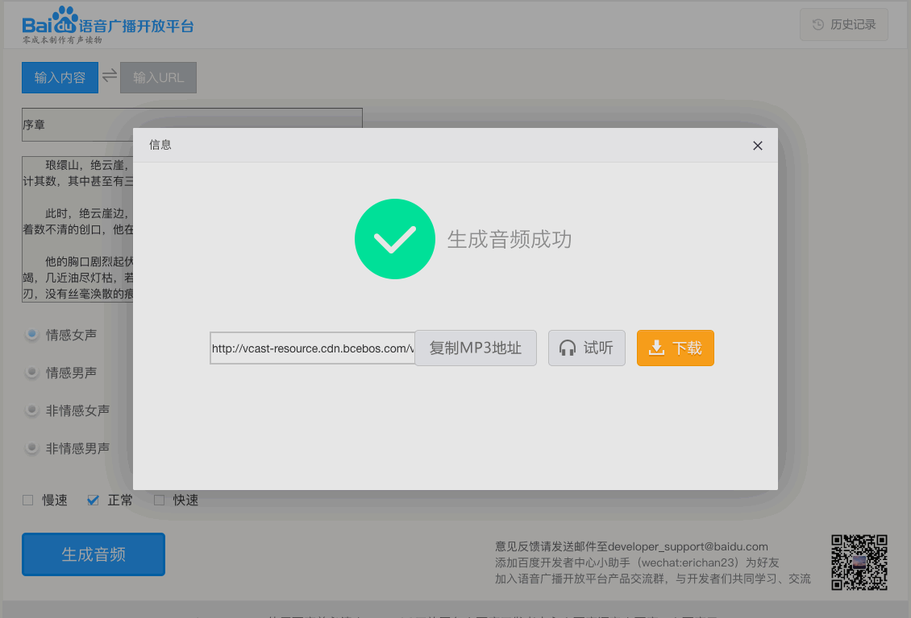

首页 > 编程笔记
Python requests使用教程（简明版）
我们只要把网页链接输入浏览器里，浏览器就会返回一个界面给我们，TA 的背后的原理是怎么样的 ？比如，在浏览器的搜索栏输入 baidu.com，得到的是百度首页。
拷贝 baidu.com 这个网页链接，再粘贴到浏览器的地址栏，发现链接好像多了点东西。
最开头有一个 https，https 是最常用的协议，也是最容易忽略的协议；www.baidu.com 是域名（如同互联网上的门牌号）。
其实最早期的互联网协议是 HTTP 协议，但是目前很多网站都已经升级到了 HTTPS 协议。HTTPS 在 HTTP 的基础上增强了安全，对传输的数据进行了加密，可以防止敏感信息被盗取、防止网页被劫持、增加恶意攻击的难度等。HTTPS 的缺点是需要付费，而且会稍微增加服务器的负担。
当我们将一个链接输入浏览器，浏览器才能找到这个网站，对吧。
他们之间做了什么呢，我们要用爬虫代替浏览器，就必先弄明白浏览器做了什么！
浏览器接受链接后，会寻找链接的地址，这个地址的主人也是一台电脑（不过是超级电脑，也叫服务器，支持大量文件的存储和计算），我们访问的网页就是这台电脑（服务器）上的某个文件，如果文件被删除了，我们就找不到啦。
浏览器找到服务器后，会发送一个请求过去，告诉服务器我们需要访问上面文件。
服务器收到请求后，会把文件发送给浏览器，这一步叫响应。
先请求后响应，用爬虫程序实现发送请求接受服务器的响应，就是我们的任务啦。
实现请求，会涉及到了网络方面的内容，知识比较枯燥。
但 Python 就是第三方库比较多，因此，我们并不需要实现TA底层的细节了。
实现请求，只需要引入一个 requests 模块即可。
今天才入门，所以我会替你解答上面的所有疑问。
对于第一个问题，requests 库中的 get() 方法能向服务器发送了一个请求，请求类型为 HTTP 协议的 GET 方式；post() 方法，也能向服务器发送一个请求，请求类型是 HTTP 协议的 POST 方式，您大可根据访问的网页而定。
class 'requests.models.Response'
最关键的就是最后一个，Response 就是响应数据 res 的对象类型。
好，既然已经知道 res 是一个 Response 对象了，我们也就可以去了解TA的相应属性和方法了。
因为我们要获取的数据是文本类，因此使用的属性是 Response.text。

看来，我们需要设置可接收的编码，使用 Response.encoding 即可：
多数情况下，网站的编码不是 utf-8 就是 gbk。
下面是改进的 Python 代码：
按照请求过程，我们先获取数据即拿到图片的地址。
鼠标右键点开蓝色高能的拷贝图像地址，这个就是参数URL啦。网页链接：https://gss2.bdstatic.com/9fo3dSag_xI4khGkpoWK1HF6hhy/baike/c0%3Dbaike220%2C5%2C5%2C220%2C73/sign=a8ecb87e13dfa9ece9235e4503b99c66/6a600c338744ebf84073be5ddbf9d72a6059a756.jpg
获取图片的 Python 代码长这样：
生成的链接：http://vcast-resource.cdn.bcebos.com/vcast-resource/de76312e-af16-4c02-a9c9-cea509719f89.mp3（这个格式是 mp3 的，和音乐的一样，您可以自己生成一个）
因为这个音频只是随手生成的，所以音频的链接随时会挂掉的，那个时候，我们访问这个链接就会出错。如果网页正常，我们就能获取数据，反之则不能。
在爬虫中通常使用 Response 对象的 status_code 属性检查请求是否成功。
对比以上三段代码，发现只有网址和 Reponse 对象的方法变了，这个方法就是 Reponse.text 和 Reponse.content。
拷贝 baidu.com 这个网页链接，再粘贴到浏览器的地址栏，发现链接好像多了点东西。
最开头有一个 https，https 是最常用的协议，也是最容易忽略的协议；www.baidu.com 是域名（如同互联网上的门牌号）。
其实最早期的互联网协议是 HTTP 协议，但是目前很多网站都已经升级到了 HTTPS 协议。HTTPS 在 HTTP 的基础上增强了安全，对传输的数据进行了加密，可以防止敏感信息被盗取、防止网页被劫持、增加恶意攻击的难度等。HTTPS 的缺点是需要付费，而且会稍微增加服务器的负担。
当我们将一个链接输入浏览器，浏览器才能找到这个网站，对吧。
他们之间做了什么呢，我们要用爬虫代替浏览器，就必先弄明白浏览器做了什么！
浏览器接受链接后，会寻找链接的地址，这个地址的主人也是一台电脑（不过是超级电脑，也叫服务器，支持大量文件的存储和计算），我们访问的网页就是这台电脑（服务器）上的某个文件，如果文件被删除了，我们就找不到啦。
浏览器找到服务器后，会发送一个请求过去，告诉服务器我们需要访问上面文件。
服务器收到请求后，会把文件发送给浏览器，这一步叫响应。
先请求后响应，用爬虫程序实现发送请求接受服务器的响应，就是我们的任务啦。
网页请求方式
一般而言，我们所用的 HTTP 协议或 HTTPS 协议，使用的请求方式只有 GET 方式和 POST 方式。- GET 方式： 访问某个网页前不需要在浏览器里输入链接之外的东西，因为我们只是想向服务器获取一些资源，可能就是一个网页。
- POST 方式：访问某个网页前需要在浏览器里输入链接之外的东西，因为这些信息是服务器需要的。 比如在线翻译，我们需要输入点英文句子，服务器才能翻译吧。
实现请求，会涉及到了网络方面的内容，知识比较枯燥。
但 Python 就是第三方库比较多，因此，我们并不需要实现TA底层的细节了。
实现请求，只需要引入一个 requests 模块即可。
使用 requests 模块
对于很多读者来说，requests 可能是一个比较陌生的模块，大家一般会提出以下几个方面的问题：- 当前模块有哪些相关函数/方法能调用 ？
- 如果有相关函数/方法，需要输入什么 ？
- 因为 Python 是一门面向对象编程的语言，万事万物皆对象；我们面对的数据本质也是对象哦，所以啊，得明白我们爬取的数据有什么方法和属性（对象都是有方法和属性的）。
今天才入门，所以我会替你解答上面的所有疑问。
对于第一个问题，requests 库中的 get() 方法能向服务器发送了一个请求，请求类型为 HTTP 协议的 GET 方式；post() 方法，也能向服务器发送一个请求，请求类型是 HTTP 协议的 POST 方式，您大可根据访问的网页而定。
访问网页
第二、三个问题，在代码里再说。实战一波就会了，不是吗？import requests # 引入 requests，实现请求 URL = 'http://c.biancheng.net/uploads/course/python_spider/191009.html' # 输入在浏览器的网址 res = requests.get(URL) # 发送 GET 方式的请求，并把返回的结果(响应)存储在 res 变量里头 # 答第二个问题，get() 方法需要输入一个网页链接 print(type(res)) # 是时候回答第三个问题了，通过 type 查看返回的数据是什么对象。打印结果 :
class 'requests.models.Response'
最关键的就是最后一个，Response 就是响应数据 res 的对象类型。
好，既然已经知道 res 是一个 Response 对象了，我们也就可以去了解TA的相应属性和方法了。
| 属性 | 功能 | 例子 |
|---|---|---|
| Response.status_code | 检查请求是否成功 | 200 代表正常，404 代表网页不存在。 |
| Response.encoding | 定义编码 | 如果编码不对，网页就会乱码的。 |
| Response.content | 把数据转成二进制 | 用于获取图片、音频类的数据。 |
| Response.text | 把数据转为字符串 | 用于获取文本、网页原代码类的数据。 |
因为我们要获取的数据是文本类，因此使用的属性是 Response.text。
print(res.text) # res 就是 Response 对象，.text 把数据转为字符串
比较的完整代码：import requests # 引入 requests，实现请求 URL = 'http://c.biancheng.net/uploads/course/python_spider/191009.html' # 输入在浏览器的网址 res = requests.get(URL) # 发送 GET 方式的请求，并把返回的结果(响应)存储在 res 变量里头 print(res.text) # res 就是 Response 对象，文本类对象使用.text 把数据转为字符串形式再输出发过来的数据，居然是乱码......

看来，我们需要设置可接收的编码，使用 Response.encoding 即可：
res.encoding = 'utf-8' # 设置可接收的编码为 utf-8
关于编码的知识请看：多数情况下，网站的编码不是 utf-8 就是 gbk。
下面是改进的 Python 代码：
import requests
# 引入 requests，实现请求
URL = 'http://c.biancheng.net/uploads/course/python_spider/191009.html'
# 输入在浏览器的网址
res = requests.get(URL)
# 发送 GET 方式的请求，并把返回的结果(响应)存储在 res 变量里头
res.encoding = 'utf-8'
# 设置可接收的编码为 utf-8
file = open('《全身在格斗中的作用》.txt', 'a+')
# 创建一个名为《全身在格斗中的作用》的txt文档，指针放在文件末尾，追加内容。（Python 基础语法)
file.write(res.text)
# 将把 Reponse 对象的内容以 [字符串] 的形式写入文件
file.close()
# 关闭文档
下载图片
现在我们下载一个图片，瞄中一个图片，如果您看的不认真，小心[杰森·斯坦森]的飞刀哦。按照请求过程，我们先获取数据即拿到图片的地址。

鼠标右键点开蓝色高能的拷贝图像地址，这个就是参数URL啦。网页链接：https://gss2.bdstatic.com/9fo3dSag_xI4khGkpoWK1HF6hhy/baike/c0%3Dbaike220%2C5%2C5%2C220%2C73/sign=a8ecb87e13dfa9ece9235e4503b99c66/6a600c338744ebf84073be5ddbf9d72a6059a756.jpg
获取图片的 Python 代码长这样：
import requests
URL = 'https://gss2.bdstatic.com/9fo3dSag_xI4khGkpoWK1HF6hhy/baike/c0%3Dbaike220%2C5%2C5%2C220%2C73/sign=a8ecb87e13dfa9ece9235e4503b99c66/6a600c338744ebf84073be5ddbf9d72a6059a756.jpg'
res = requests.get(URL)
# 发出请求，并把返回的结果放在变量res中
photo = open('Be careful.jpg','wb')
# 新建了一个文件Be careful.jpg，这里的文件没加路径，会被保存在程序运行的当前目录下。
photo.write(res.content)
# 将 Reponse 对象的内容以 [二进制数据] 的形式写入文件
photo.close()
# 关闭文档
【作业】下载音频/音乐
这是一个作业，请读者自己完成。Tips：下载音乐和下载图片的思路代码几乎是一样的，只是 URL 的不同。
下载音乐的地址是 https://developer.baidu.com/vcast，这个链接是百度的文字转语音平台，生成的语音（格式同音乐）也可爬。

生成的链接：http://vcast-resource.cdn.bcebos.com/vcast-resource/de76312e-af16-4c02-a9c9-cea509719f89.mp3（这个格式是 mp3 的，和音乐的一样，您可以自己生成一个）
因为这个音频只是随手生成的，所以音频的链接随时会挂掉的，那个时候，我们访问这个链接就会出错。如果网页正常，我们就能获取数据，反之则不能。
在爬虫中通常使用 Response 对象的 status_code 属性检查请求是否成功。
print(res.status_code) # 查看网页状态，200 表示正常
200 表示成功，其TA的情况也分别对应着某个数，具体请看 HTTP 状态码。小结
本节讲解了 Python requests 模块的简单使用，阅读完本节你就可以快速上手了。对比以上三段代码，发现只有网址和 Reponse 对象的方法变了，这个方法就是 Reponse.text 和 Reponse.content。
- Reponse.text 是用于下载文本（网页源代码）。html 语言即网页源代码，您可以理解为和 TXT 文档一样，只是加了些格式所以功能就独特。
- Reponse.content 是用于下载视频、音频、图片，这些都是二进制存储的。
关注公众号「站长严长生」，在手机上阅读所有教程，随时随地都能学习。内含一款搜索神器，免费下载全网书籍和视频。

微信扫码关注公众号